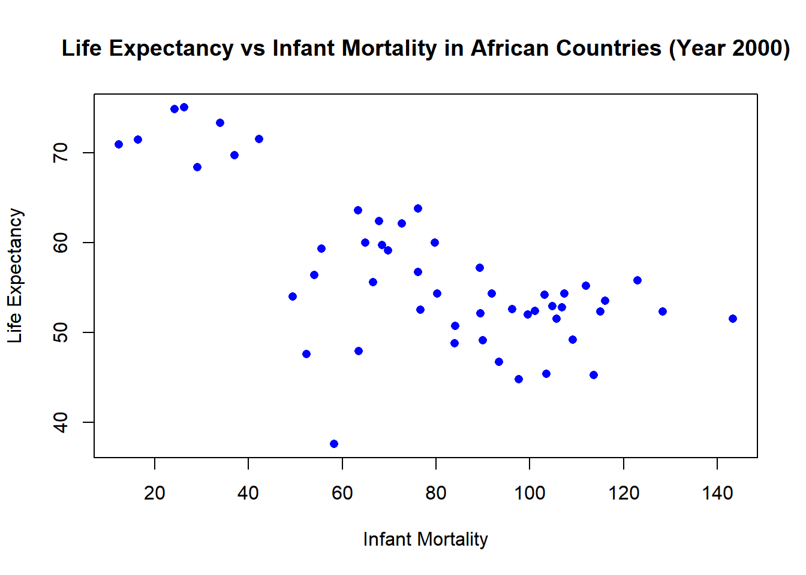

## Installing the dslabs Package from a Local File
# Download the appropriate Zip file for the 'dslabs' package.
# The exact file you need depends on your version of R.
# In this example, the file 'dslabs_0.8.0.zip' is used, suitable for the 'r-release' version of R.
# 'repos = NULL' tells R that the package is being installed from a local file rather than a repository.
# 'type = "win.binary"' specifies that the package is a Windows binary file.
# install.packages("C:/Users/Joaquin/School/DA - 6833 (Summer 2024)/Joaquin_Ramriez_Portfolio_II/coding-exercise/dslabs_0.8.0.zip",
# repos = NULL,
# type = "win.binary")R Coding Exercise
library(tidyverse) # Loads tidyverse packages, including dplyr.Warning: package 'ggplot2' was built under R version 4.3.2── Attaching core tidyverse packages ──────────────────────── tidyverse 2.0.0 ──
✔ dplyr 1.1.2 ✔ readr 2.1.4
✔ forcats 1.0.0 ✔ stringr 1.5.0
✔ ggplot2 3.4.4 ✔ tibble 3.2.1
✔ lubridate 1.9.2 ✔ tidyr 1.3.0
✔ purrr 1.0.2
── Conflicts ────────────────────────────────────────── tidyverse_conflicts() ──
✖ dplyr::filter() masks stats::filter()
✖ dplyr::lag() masks stats::lag()
ℹ Use the conflicted package (<http://conflicted.r-lib.org/>) to force all conflicts to become errorslibrary(dslabs) # Loads the dslabs.Warning: package 'dslabs' was built under R version 4.4.0# This function helps access the documentation for the gapminder dataset and provides detailed information about the dataset structure, variables, and source.
help(gapminder)starting httpd help server ... done# The summary() function provides statistical summary of the dataset.Which includes minimum, first quartile, median, mean, third quartile, and maximum values for each variable.
summary(gapminder) country year infant_mortality life_expectancy
Albania : 57 Min. :1960 Min. : 1.50 Min. :13.20
Algeria : 57 1st Qu.:1974 1st Qu.: 16.00 1st Qu.:57.50
Angola : 57 Median :1988 Median : 41.50 Median :67.54
Antigua and Barbuda: 57 Mean :1988 Mean : 55.31 Mean :64.81
Argentina : 57 3rd Qu.:2002 3rd Qu.: 85.10 3rd Qu.:73.00
Armenia : 57 Max. :2016 Max. :276.90 Max. :83.90
(Other) :10203 NA's :1453
fertility population gdp continent
Min. :0.840 Min. :3.124e+04 Min. :4.040e+07 Africa :2907
1st Qu.:2.200 1st Qu.:1.333e+06 1st Qu.:1.846e+09 Americas:2052
Median :3.750 Median :5.009e+06 Median :7.794e+09 Asia :2679
Mean :4.084 Mean :2.701e+07 Mean :1.480e+11 Europe :2223
3rd Qu.:6.000 3rd Qu.:1.523e+07 3rd Qu.:5.540e+10 Oceania : 684
Max. :9.220 Max. :1.376e+09 Max. :1.174e+13
NA's :187 NA's :185 NA's :2972
region
Western Asia :1026
Eastern Africa : 912
Western Africa : 912
Caribbean : 741
South America : 684
Southern Europe: 684
(Other) :5586 # The class() function is used to determine the type of object that gapminder is.
class(gapminder)[1] "data.frame"Processing Data
data("gapminder") # Load the gapminder dataset from the dslabs package.
africadata <- gapminder %>% # Filter the dataset to include only African countries.
filter(continent == "Africa") # The filter() function is used to specifically focus on the African Country.
str(africadata) # Check the structure of the 'africadata'.'data.frame': 2907 obs. of 9 variables:
$ country : Factor w/ 185 levels "Albania","Algeria",..: 2 3 18 22 26 27 29 31 32 33 ...
$ year : int 1960 1960 1960 1960 1960 1960 1960 1960 1960 1960 ...
$ infant_mortality: num 148 208 187 116 161 ...
$ life_expectancy : num 47.5 36 38.3 50.3 35.2 ...
$ fertility : num 7.65 7.32 6.28 6.62 6.29 6.95 5.65 6.89 5.84 6.25 ...
$ population : num 11124892 5270844 2431620 524029 4829291 ...
$ gdp : num 1.38e+10 NA 6.22e+08 1.24e+08 5.97e+08 ...
$ continent : Factor w/ 5 levels "Africa","Americas",..: 1 1 1 1 1 1 1 1 1 1 ...
$ region : Factor w/ 22 levels "Australia and New Zealand",..: 11 10 20 17 20 5 10 20 10 10 ...summary(africadata) # Get summary statistics for the 'africadata'. country year infant_mortality life_expectancy
Algeria : 57 Min. :1960 Min. : 11.40 Min. :13.20
Angola : 57 1st Qu.:1974 1st Qu.: 62.20 1st Qu.:48.23
Benin : 57 Median :1988 Median : 93.40 Median :53.98
Botswana : 57 Mean :1988 Mean : 95.12 Mean :54.38
Burkina Faso: 57 3rd Qu.:2002 3rd Qu.:124.70 3rd Qu.:60.10
Burundi : 57 Max. :2016 Max. :237.40 Max. :77.60
(Other) :2565 NA's :226
fertility population gdp continent
Min. :1.500 Min. : 41538 Min. :4.659e+07 Africa :2907
1st Qu.:5.160 1st Qu.: 1605232 1st Qu.:8.373e+08 Americas: 0
Median :6.160 Median : 5570982 Median :2.448e+09 Asia : 0
Mean :5.851 Mean : 12235961 Mean :9.346e+09 Europe : 0
3rd Qu.:6.860 3rd Qu.: 13888152 3rd Qu.:6.552e+09 Oceania : 0
Max. :8.450 Max. :182201962 Max. :1.935e+11
NA's :51 NA's :51 NA's :637
region
Eastern Africa :912
Western Africa :912
Middle Africa :456
Northern Africa :342
Southern Africa :285
Australia and New Zealand: 0
(Other) : 0 africa_infant_life <- africadata %>% # Created a new object with only infant_mortality and life_expectancy variables.
select(infant_mortality, life_expectancy) # Select only the 'infant_mortality' and 'life_expectancy' columns.
str(africa_infant_life) # Check the structure of the new 'africa_infant_life'.'data.frame': 2907 obs. of 2 variables:
$ infant_mortality: num 148 208 187 116 161 ...
$ life_expectancy : num 47.5 36 38.3 50.3 35.2 ...summary(africa_infant_life) # Get summary statistics for the 'africa_infant_life'. infant_mortality life_expectancy
Min. : 11.40 Min. :13.20
1st Qu.: 62.20 1st Qu.:48.23
Median : 93.40 Median :53.98
Mean : 95.12 Mean :54.38
3rd Qu.:124.70 3rd Qu.:60.10
Max. :237.40 Max. :77.60
NA's :226 africa_population_life <- africadata %>% # Created another new object with only population and life_expectancy variables.
select(population, life_expectancy) # Select only the 'population' and 'life_expectancy' columns.
str(africa_population_life) # Check the structure of the 'africa_population_life'.'data.frame': 2907 obs. of 2 variables:
$ population : num 11124892 5270844 2431620 524029 4829291 ...
$ life_expectancy: num 47.5 36 38.3 50.3 35.2 ...summary(africa_population_life) # Get summary statistics for the 'africa_population_life'. population life_expectancy
Min. : 41538 Min. :13.20
1st Qu.: 1605232 1st Qu.:48.23
Median : 5570982 Median :53.98
Mean : 12235961 Mean :54.38
3rd Qu.: 13888152 3rd Qu.:60.10
Max. :182201962 Max. :77.60
NA's :51 Analyzing Relationships in African Countries’ Data (Plotting)
# Plotting life expectancy against infant mortality.
plot(africa_infant_life$infant_mortality, africa_infant_life$life_expectancy,
xlab = "Infant Mortality", ylab = "Life Expectancy",
main = "Life Expectancy vs Infant Mortality in African Countries",
pch = 16, col = "blue")# Plotting life expectancy against population size (log scale x-axis).
plot(africa_population_life$population, africa_population_life$life_expectancy,
xlab = "Population Size", ylab = "Life Expectancy",
main = "Life Expectancy vs Population Size in African Countries",
pch = 16, col ="red",
log = "x") # Setting x-axis to log scale.The streaks observed in the population vs life expectancy. - The dataset ‘africadata’ includes observations from different regions represented by multiple data points. - Countries with larger populations tend to have better resources.
The negative correlation between infant mortality and life expectancy is higher. - Infant mortality rates tend to be associated with lower life expectancies. - Countries with higher infant mortality rates often face challenges in healthcare, sanitation, and nutrition.
Both visualizations highlight important demographic and health trends in Africans. Presenting both challenges and potential areas for improvement.
Year 2000 from African Countries Data (More Data Processing)
# Check for missing values (NA) in the 'infant_mortality' variable in africadata.
missing_infant_mortality <- table(is.na(africadata$infant_mortality))
missing_infant_mortality
FALSE TRUE
2681 226 Filtering Data for the Year 2000
# Identify years with missing data for infant mortality.
years_with_missing <- unique(africadata$year[is.na(africadata$infant_mortality)])
years_with_missing [1] 1960 1961 1962 1963 1964 1965 1966 1967 1968 1969 1970 1971 1972 1973 1974
[16] 1975 1976 1977 1978 1979 1980 1981 2016# Selecting year 2000
year_selected <- 2000
# Filter dataset to include only data for the year 2000.
africadata_2000 <- africadata %>%
filter(year == year_selected)
# Display the structure of the new object to verify it contains 51 observations and 9 variables.
str(africadata_2000)'data.frame': 51 obs. of 9 variables:
$ country : Factor w/ 185 levels "Albania","Algeria",..: 2 3 18 22 26 27 29 31 32 33 ...
$ year : int 2000 2000 2000 2000 2000 2000 2000 2000 2000 2000 ...
$ infant_mortality: num 33.9 128.3 89.3 52.4 96.2 ...
$ life_expectancy : num 73.3 52.3 57.2 47.6 52.6 46.7 54.3 68.4 45.3 51.5 ...
$ fertility : num 2.51 6.84 5.98 3.41 6.59 7.06 5.62 3.7 5.45 7.35 ...
$ population : num 31183658 15058638 6949366 1736579 11607944 ...
$ gdp : num 5.48e+10 9.13e+09 2.25e+09 5.63e+09 2.61e+09 ...
$ continent : Factor w/ 5 levels "Africa","Americas",..: 1 1 1 1 1 1 1 1 1 1 ...
$ region : Factor w/ 22 levels "Australia and New Zealand",..: 11 10 20 17 20 5 10 20 10 10 ...# Get a statistical summary of the new object.
summary(africadata_2000) country year infant_mortality life_expectancy
Algeria : 1 Min. :2000 Min. : 12.30 Min. :37.60
Angola : 1 1st Qu.:2000 1st Qu.: 60.80 1st Qu.:51.75
Benin : 1 Median :2000 Median : 80.30 Median :54.30
Botswana : 1 Mean :2000 Mean : 78.93 Mean :56.36
Burkina Faso: 1 3rd Qu.:2000 3rd Qu.:103.30 3rd Qu.:60.00
Burundi : 1 Max. :2000 Max. :143.30 Max. :75.00
(Other) :45
fertility population gdp continent
Min. :1.990 Min. : 81154 Min. :2.019e+08 Africa :51
1st Qu.:4.150 1st Qu.: 2304687 1st Qu.:1.274e+09 Americas: 0
Median :5.550 Median : 8799165 Median :3.238e+09 Asia : 0
Mean :5.156 Mean : 15659800 Mean :1.155e+10 Europe : 0
3rd Qu.:5.960 3rd Qu.: 17391242 3rd Qu.:8.654e+09 Oceania : 0
Max. :7.730 Max. :122876723 Max. :1.329e+11
region
Eastern Africa :16
Western Africa :16
Middle Africa : 8
Northern Africa : 6
Southern Africa : 5
Australia and New Zealand: 0
(Other) : 0 Plotting Life Expectancy against Infant Mortality - Year 2000 (More Plotting)
# Plotting life expectancy against infant mortality for year 2000.
plot(africadata_2000$infant_mortality, africadata_2000$life_expectancy,
xlab = "Infant Mortality", ylab = "Life Expectancy",
main = "Life Expectancy vs Infant Mortality in African Countries (Year 2000)",
pch = 16, col = "blue")
# Plotting life expectancy against population size (log scale x-axis) for year 2000.
plot(africadata_2000$population, africadata_2000$life_expectancy,
xlab = "Population Size", ylab = "Life Expectancy",
main = "Life Expectancy vs Population Size in African Countries (Year 2000)",
pch = 16, col = "red",
log = "x") # Setting x-axis to log scale.# Applying linear regression model to explore relationships.
model_infant_life <- lm(life_expectancy ~ infant_mortality, data = africadata_2000)
model_pop_life <- lm(life_expectancy ~ population, data = africadata_2000)
# Summarize the linear regression models.
summary(model_infant_life)
Call:
lm(formula = life_expectancy ~ infant_mortality, data = africadata_2000)
Residuals:
Min 1Q Median 3Q Max
-22.6651 -3.7087 0.9914 4.0408 8.6817
Coefficients:
Estimate Std. Error t value Pr(>|t|)
(Intercept) 71.29331 2.42611 29.386 < 2e-16 ***
infant_mortality -0.18916 0.02869 -6.594 2.83e-08 ***
---
Signif. codes: 0 '***' 0.001 '**' 0.01 '*' 0.05 '.' 0.1 ' ' 1
Residual standard error: 6.221 on 49 degrees of freedom
Multiple R-squared: 0.4701, Adjusted R-squared: 0.4593
F-statistic: 43.48 on 1 and 49 DF, p-value: 2.826e-08summary(model_pop_life)
Call:
lm(formula = life_expectancy ~ population, data = africadata_2000)
Residuals:
Min 1Q Median 3Q Max
-18.429 -4.602 -2.568 3.800 18.802
Coefficients:
Estimate Std. Error t value Pr(>|t|)
(Intercept) 5.593e+01 1.468e+00 38.097 <2e-16 ***
population 2.756e-08 5.459e-08 0.505 0.616
---
Signif. codes: 0 '***' 0.001 '**' 0.01 '*' 0.05 '.' 0.1 ' ' 1
Residual standard error: 8.524 on 49 degrees of freedom
Multiple R-squared: 0.005176, Adjusted R-squared: -0.01513
F-statistic: 0.2549 on 1 and 49 DF, p-value: 0.6159We observe a negative correlation between life expectancy and infant mortality, higher infant mortality rates are associated with lower life expectancies.
The life expectancy and population size, show no clear correlation.
There is a statistically significant negative relation between infant_mortality and life_expectancy in African countries for the year 2000 pvalue (2.826-08). The r-squared 0.4701, tells us that infant mortality is a strong predictor of life expectancies.
There is no statistically significant relation between population and life_expectancy in African countries for the year 2000 pvalue (0.6159). The r-squared (0.005176), is significantly low and does not provide us meaningful information.
In conclusion, infant mortality showed a significant negative correlation with life expectancy, population size does not appear to have a significant relationship with life expectancy in African countries based on the data from the year 2000.
This Section contributed by SRI LAKSHMI SUDHA GANNI
For this section, I will be using the mice_weights database from dslabs.
1.Loading Required Libraries:
library('dslabs')
library('dplyr')
library(ggplot2)
help(mice_weights)2.Get an overview of the dataset:
str(mice_weights) # List of varaibles in the dataset'data.frame': 780 obs. of 7 variables:
$ body_weight : num 27.6 23 28.7 32.6 28.6 ...
$ bone_density: num 0.616 0.769 0.684 0.644 0.53 ...
$ percent_fat : num 7.26 4.95 6.02 9.54 6.99 ...
$ sex : Factor w/ 2 levels "F","M": 1 1 1 1 1 1 1 1 1 1 ...
$ diet : Factor w/ 2 levels "chow","hf": 1 1 1 1 1 1 1 1 1 1 ...
$ gen : Factor w/ 5 levels "4","7","8","9",..: 1 1 1 1 1 1 1 1 1 1 ...
$ litter : Factor w/ 2 levels "1","2": 1 1 1 1 1 1 1 1 1 1 ...3.get summary of the dataset:
summary(mice_weights) # Summary of the mice weights dataset body_weight bone_density percent_fat sex diet gen
Min. :18.13 Min. :0.2708 Min. : 2.552 F:398 chow:394 4 : 97
1st Qu.:28.09 1st Qu.:0.4888 1st Qu.: 5.566 M:382 hf :386 7 :195
Median :32.98 Median :0.5643 Median : 8.276 8 :193
Mean :34.08 Mean :0.5697 Mean : 8.594 9 : 97
3rd Qu.:39.37 3rd Qu.:0.6373 3rd Qu.:10.926 11:198
Max. :65.15 Max. :0.9980 Max. :22.154
NA's :4 NA's :4
litter
1:442
2:338
4.determine the type of object that mice_weights is:
class(mice_weights) # Datatype of mice weights dataframe[1] "data.frame"Data Processing: 1.Check for missing values:
sum(is.na(mice_weights)) # Number of NA values in the dataset[1] 8dim(mice_weights) # Number of rows and columns in the dataset[1] 780 72.removing the null values:
cleaned_data <- na.omit(mice_weights) # Remove rows with NA values
dim(cleaned_data) # Number of rows and columns in the cleaned dataset[1] 776 7Modeling of body weight by type of diet
Boxplot of weight by diet:
boxplot(cleaned_data$body_weight ~ cleaned_data$diet, xlab = "Diet", ylab = "Weight", main = "Weight by Diet") # Boxplot of weight by dietThe boxplot shows that the high fat diet mice are, on average, heavier than the mice on the control diet.
Comparing group means:
t.test(cleaned_data$body_weight ~ cleaned_data$diet) # t-test comparing weight by diet
Welch Two Sample t-test
data: cleaned_data$body_weight by cleaned_data$diet
t = -9.2305, df = 709.9, p-value < 2.2e-16
alternative hypothesis: true difference in means between group chow and group hf is not equal to 0
95 percent confidence interval:
-6.193914 -4.021185
sample estimates:
mean in group chow mean in group hf
31.53701 36.64455 The t-test results show that the difference in weight between the high fat diet and control diet groups is statistically significant (p-value < 0.05).
Hypothesis Testing:
model <- lm(body_weight ~ diet, data = cleaned_data)
summary(model)
Call:
lm(formula = body_weight ~ diet, data = cleaned_data)
Residuals:
Min 1Q Median 3Q Max
-18.5146 -5.5614 -0.6608 4.6654 28.5054
Coefficients:
Estimate Std. Error t value Pr(>|t|)
(Intercept) 31.5370 0.3866 81.574 <2e-16 ***
diethf 5.1075 0.5510 9.269 <2e-16 ***
---
Signif. codes: 0 '***' 0.001 '**' 0.01 '*' 0.05 '.' 0.1 ' ' 1
Residual standard error: 7.674 on 774 degrees of freedom
Multiple R-squared: 0.09992, Adjusted R-squared: 0.09875
F-statistic: 85.92 on 1 and 774 DF, p-value: < 2.2e-16The linear regression model shows that the high fat diet group has a statistically significant higher weight compared to the control diet group (p-value < 0.05). An intecept of 31.57 and slope of 5.1075 are observed indicating a positive correlation between high fat diet and weight.
Modeling of body weight by type of diet and sex
cleaned_data |> ggplot(aes(diet, (body_weight), fill = sex)) + geom_boxplot() # Boxplot of weight by diet and sexThe boxplot shows the distribution of weight by diet. The high fat diet group has a higher average weight compared to the control diet group, and the difference is more pronounced in males.
fit <- lm(body_weight ~ diet*sex, data = cleaned_data)
summary(fit)
Call:
lm(formula = body_weight ~ diet * sex, data = cleaned_data)
Residuals:
Min 1Q Median 3Q Max
-17.745 -4.260 -0.643 3.932 33.473
Coefficients:
Estimate Std. Error t value Pr(>|t|)
(Intercept) 27.8286 0.4405 63.180 < 2e-16 ***
diethf 3.8482 0.6253 6.154 1.21e-09 ***
sexM 7.5315 0.6277 11.998 < 2e-16 ***
diethf:sexM 2.7263 0.8948 3.047 0.00239 **
---
Signif. codes: 0 '***' 0.001 '**' 0.01 '*' 0.05 '.' 0.1 ' ' 1
Residual standard error: 6.229 on 772 degrees of freedom
Multiple R-squared: 0.4085, Adjusted R-squared: 0.4062
F-statistic: 177.7 on 3 and 772 DF, p-value: < 2.2e-16we can observe that
1.Intercept (27.8286) is the estimated average body weight for the baseline group (presumably the control diet and female sex, depending on how the factors are coded) when all other predictors are held at zero.
2.The coefficient for dietHF (3.0000) represents the estimated difference in average body weight between the high-fat diet group and the control diet
3.sexM (7.5315): This is the additional weight estimated for males over females, assuming all else is constant.
4.males on dietF have an additional 2.7263 units of body weight change compared to what would be predicted by dietF and sexM alone.
5.All predictors have very small p-values (Pr(>|t|)), well below 0.05, suggesting that their effects are statistically significant. Approximately 40.85% of the variance in body weight is explained by the model.